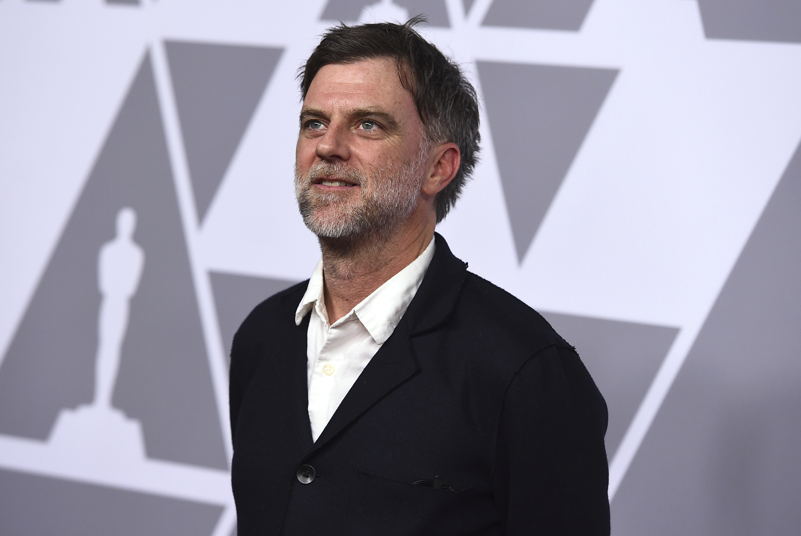

98th Annual Academy Awards
Melhor Diretor
Conheça os candidatos à Premiação do Oscar 2026 por Melhor Diretor.

Vencedor
Paul Thomas Anderson
Uma Batalha Após a Outra
Conhecido pelo uso magistral de planos-sequência e trilhas sonoras imersivas (geralmente de Jonny Greenwood), Anderson parece estar misturando o realismo sujo de Vício Inerente com a grandiosidade de um épico contemporâneo.
Os especialistas destacam sua audácia em transitar para um cinema mais dinâmico e "populista" sem perder a profundidade psicológica. Sua direção é descrita como ambiciosa, extraindo performances cruas de um elenco estelar em cenários urbanos vibrantes.
Ryan Coogler
Pecadores
Ele utiliza o gênero de horror para discutir questões históricas e raciais com uma estética gótica e sombria. Sua direção é focada na construção de tensão crescente e em um visual rico em sombras e texturas.
Coogler é elogiado por sua habilidade em equilibrar o entretenimento de gênero com substância social. A crítica aponta que sua direção em Sinners é "visceral e autoconfiante", provando que ele é um dos poucos diretores capazes de comandar grandes espetáculos com uma visão autoral clara.
Joachim Trier
Valor Sentimental
Sua direção é íntima, intelectual e profundamente empática. Ele utiliza o tempo e a memória de forma não linear para desvendar a psique de seus personagens.
Trier é aclamado por sua "sensibilidade europeia" e pela precisão com que dirige atores. A crítica internacional destaca que ele consegue transformar dramas familiares banais em algo cinematograficamente poético e universalmente comovente.
Chloé Zhao
Hamnet: A Vida antes de Hamlet
Zhao é mestre em usar a luz natural e as paisagens para refletir o estado emocional dos personagens. Em Hamnet, ela traz uma abordagem quase documental para um drama de época, focando na conexão entre a vida doméstica e a criação artística.
Foi elogiada por "humanizar a história", fugindo da pompa dos filmes de época tradicionais. A crítica ressalta como ela consegue capturar a beleza no luto, criando uma atmosfera lírica e visualmente deslumbrante.

Josh Safdie
Marty Supreme
Espere o caos controlado, a edição frenética e a trilha sonora pulsante que são marcas registradas dos Safdie, mas agora aplicados a uma estética de época. Sua direção foca na obsessão do protagonista e no ritmo frenético da competição.
A crítica estava curiosa para ver como Josh se sairia "sozinho", e o consenso inicial é de que ele mantém a energia maníaca que o consagrou. Ele é elogiado por transformar um esporte aparentemente simples em uma experiência cinematográfica de alta voltagem e ansiedade.